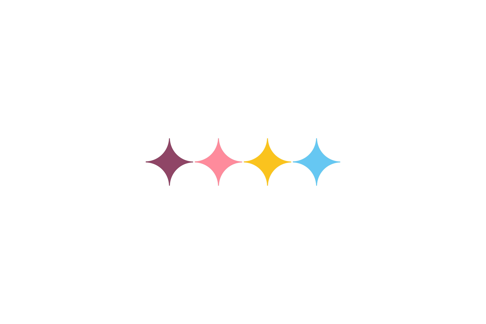
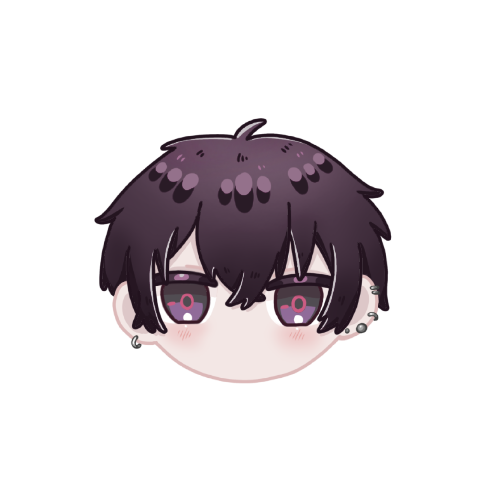
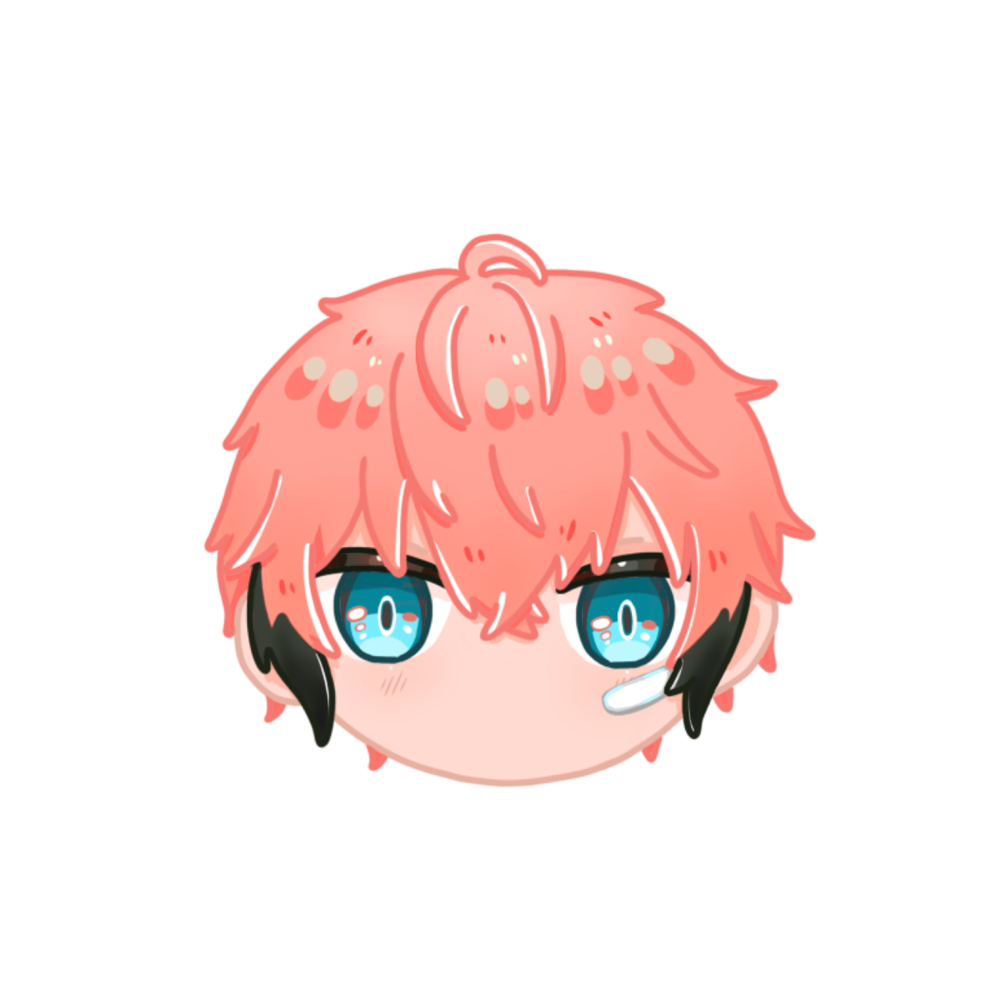
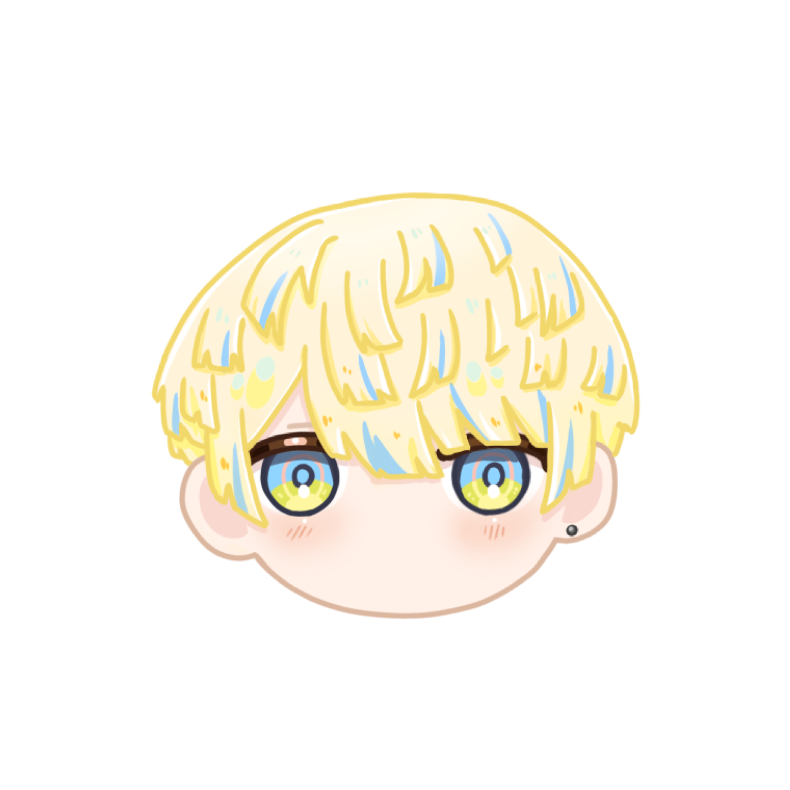
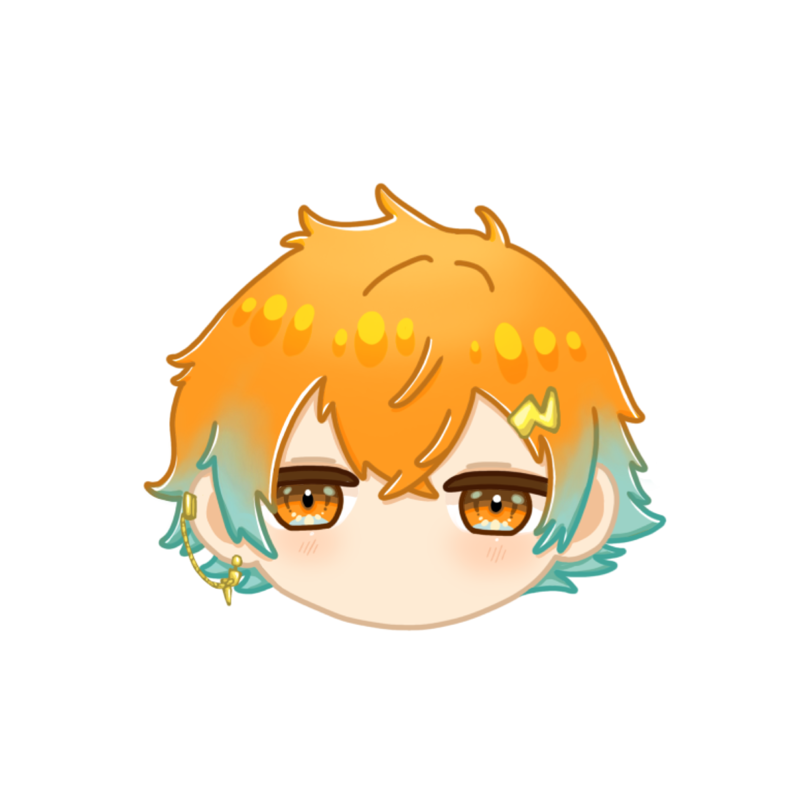

在某座島國東側，隨著近代都市的不斷擴張與科技發展，英雄通過變身裝置來對抗敵人。
守護東側的英雄組合——Oriens！如閃電般疾馳而過！

最近剛拿到變身裝置的學生。雖然身為英雄見習生，技術還不夠成熟，但其內心之強大，難逢敵手。一段純粹而赤誠的英雄譚，就因此拉開序幕……的樣子。
変身デバイスを最近手に入れた学生。まだ技術面は半熟なヒーロー見習いだが、ハートの強さは敵知らず。一徹無垢な英雄譚はここから始まる。らしい。

將旅行稱為“冒險”的學生。雖然經常在不知不覺中幫助他人，但本人對此並無自覺。喜歡做菜並邀請大家品嚐。
旅行のことを冒険と称して旅する学生。気がついたら人助けをしているが、本人にその自覚はない。自分の作ったご飯を振る舞うのが趣味。

一位至今仍未走紅的喜劇演員。他認定自己之所以“冷場”，是因為邪惡勢力奪走了大家的笑容，於是便化身為英雄。
まだまだ燻っているコメディアン。自分がスベるのは、悪が皆の笑顔を奪ったせいだと思い込んでヒーローになった。

力量就是POWER。訓練絕對不會背叛你。會背叛的，永遠只有自己。來吧！今天也跟啞鈴手牽手吧！
力こそパワー。トレーニングは裏切らない。裏切るのはいつも自分自身だ。さぁ！今日もダンベルと手を繋ごう！